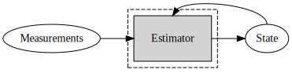

State estimation

Adding information on the dynamics of the body, for instance
- the velocity v
- the acceleration a
- the angular velocity \omega
leads to the usage of kinematics models, required by state-space estimators such as Kalman filters.
The augmented state to estimate becomes:
\displaystyle x = (p, v, a, q, \omega)^\top \displaystyle x \in \mathbb{R}^{15}